전파전자통신기능사 (2022-03-12 기출문제)
1과목: 임의 구분
1. 다음 중 디지털 신호(0, 1)의 정보 내용에 따라 반송파의 진폭을 변화시키는 디지털 변조방식은?
- ASK
- FSK
- PSK
- QAM
(정답률: 81%)

2. 무선송신기의 스퓨어리스 발사를 경감하기 위한 대책으로 옳지 않은 것은?
- 동조회로의 Q를 높게 한다.
- π형 결합회로(LPF)를 사용한다.
- 급전선에 트랩(trap)을 사용한다.
- 기수차 고조파 제거를 위해 A급 증폭회로를 사용한다.
(정답률: 59%)
3. 다음 중 AM 통신 방식에 비해 FM 통신 방식의 특징으로 맞는 것은?
- 점유주파수대폭이 비교적 좁다.
- 주로 초단파대 이상에서 사용된다.
- 송·수신기의 회로가 간단하다.
- 소비전력이 많다.
(정답률: 84%)
4. Radar의 송신기 구성요소가 아닌 것은?
- 주발진기(Trigger generator)
- 변조기
- 마그네트론(Magnetron)
- 지시기
(정답률: 64%)
5. 다음 중 디지털TV 방송에 대한 설명으로 옳지 않은 것은?
- 아날로그 방송에 비해 고화질, 고음질이다.
- 한 채널에 여러 개의 프로그램을 방송할 수 있다.
- 쌍방향 커뮤니케이션이 가능하다.
- 디지털TV방송은 셋톱박스를 통해서만 시청할 수 있다.
(정답률: 85%)
6. 비상위치지시용 무선표지설비(EPIRB: Emergency Position Indicating Radio Beacon)에 대한 설명으로 옳지 않은 것은?
- 선박의 갑작스런 침몰 시에 자동으로 부양하여 조난신호를 전송할 목적으로 만들어진 비콘이다.
- 선박이 침몰 시 1.5~4m 사이의 수압을 받으면 수압 풀림 장치가 작동하여 EPIRB가 작동하기 시작한다.
- 태풍 또는 심한 횡요가 있는 경우 선박에서 분실될 우려가 있으므로 잠시 선내에 보관해 두어야 한다.
- 일반적으로 수압 이탈 장치의 유효기간은 2년이며, EPIRB 배터리의 유효기간은 일반적으로 5년이다.
(정답률: 89%)
7. 최적운용주파수(FOT)가 17[MHz]일 때 최고사용주파수(MUF)는 대략 몇 [MHz]인가?
- 8.5[MHz]
- 10[MHz]
- 17[MHz]
- 20[MHz]
(정답률: 77%)
8. 다음 중 야기안테나의 구성소자가 아닌 것은?
- 도파기
- 증폭기
- 투사기
- 반사기
(정답률: 50%)
9. 다음 중 초단파(VHF)용 안테나로 적절하지 않은 것은?
- 휩 안테나
- 브라운 안테나
- 슬리브 안테나
- 롬빅 안테나
(정답률: 64%)
10. 다음 중 급전선의 필요조건으로 가장 적절하지 않은 것은?
- 전송 효율이 좋아야 한다.
- 급전선의 파동 임피던스는 커야한다.
- 가격이 저렴하고, 유지보수가 용이해야 한다.
- 외부의 다른 신호와 유도 방해를 주거나 받지 않아야 한다
(정답률: 87%)
11. 입사파 전압이 10[V], 반사파 전압이 2[V]일 경우 정재파비(VSWR)는 얼마인가?
- 0.5
- 1
- 1.5
- 2
(정답률: 67%)
12. 다음 중 마이크로파 통신의 일반적인 특징으로 옳지 않은 것은?
- 반송파 주파수가 높으므로 외부 잡음의 영향이 작다.
- 지향성이 예민하여 점대점(Point To Point) 통신이 가능하다.
- 통신범위는 일반적으로 큰 장애물이 없는 가시거리 내이다.
- 파장이 짧으므로 전리층을 이용한 원거리 통신이 용이하다.
(정답률: 88%)
13. Sea Area 2에서 DSC 기능을 장착하고 있는 GMDSS 장비는?
- NAVTEX 수신기
- MF/HF 무선설비
- Immarsat-F 통신장비
- 위성 EPIRB
(정답률: 78%)
14. DSC 조난경보 송신 시 담고 있는 기본 정보 3가지를 가장 바르게 나열한 것은?
- 조난의 종류, 조난시간, 조난위치
- 조난시간, 조난위치, 조난자의 식별부호
- 조난의 종류, 조난위치, 조난자의 식별부호
- 조난자의 위치, 조난자의 항해방향, 조난시간
(정답률: 88%)
15. 다음 중 위성통신에 대한 설명으로 적합하지 않은 것은?
- 주로 초단파를 이용한다.
- 대용량의 통신 및 다원 접속이 가능하다.
- 지리적 여건에 관계없이 회선설정이 용이하다.
- 보안유지를 위한 특별한 암호장치가 필요하다.
(정답률: 63%)
16. 하나의 트랜스폰더를 여러 지구국이 공유할 수 있도록 주파수 대역폭을 분할하여 서로 간섭없이 통신할 수 있게 하는 방식은?
- 시분할 다원 접속 방식
- 부호 분할 다원 접속 방식
- 파장 분할 다원 접속 방식
- 주파수 분할 다원 접속 방식
(정답률: 87%)
17. 병렬공진 회로에서 코일의 인덕턴스 100[μH], 콘덴서의 용량 400[pF], 공진 주파수에서 Q가 50일 때 코일의 저항은 얼마인가?
- 0.1[Ω]
- 1[Ω]
- 10[Ω]
- 100[Ω]
(정답률: 56%)
18. Sweep Time이 0.1[ms/cm], 수직편향 감도가 1[V/cm]로 조정된 오실로스코프로 펄스를 관찰하여 보니 수평축 10[cm] scale 안에 10개의 펄스 신호가 나타났으며 진폭이 5[cm]로 관측되었다. 이 펄스의 주파수와 최대 전압 값은 얼마인가?
- 1[kHz], 50[V]
- 10[kHz], 5[V]
- 100[kHz], 0.5[V]
- 100[kHz], 5[V]
(정답률: 65%)
19. 수직 접지 안테나의 높이(h)가 25[m]이고, 안테나가 복사하는 전파의 파장(λ)이 100[m]일 때, 전파의 주파수는?
- 1[MHz]
- 2[MHz]
- 3[MHz]
- 4[MHz]
(정답률: 48%)
20. 실효높이 2[m]인 안네나의 유기되는 전압이 100[μV]일 때 그 지점의 전계강도는 몇 [μV/m]인가?
- 25
- 50
- 100
- 400
(정답률: 58%)
2과목: 임의 구분
21. 힝행 구역별(A1, A2, A3, A4)로 구비해야 할 GMDSS 무선설비를 분류할 때 MF(중파) 대역 또는 HF(단파) 대역 무선설비가 의무적이지 않은 것은?
- A1 해역
- A2 해역
- A3 해역
- A4 해역
(정답률: 83%)
22. 다음 중 양방향 VHF 무선전화에 대한 설명으로 옳은 것을 모두 고른 것은?
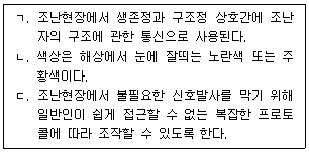
- ㄱ, ㄴ
- ㄴ, ㄷ
- ㄱ, ㄷ
- ㄱ, ㄴ, ㄷ
(정답률: 75%)
23. 다음 중 “국제전기통신연합 협약”을 영어로 가장 잘 표현한 것은?
- The International Communication Union
- The International Radio Regulation
- Convention of the International Telecommunication Union
- The International Telecommunication Law
(정답률: 94%)
24. 다음 문장의 밑줄 친 부분을 가장 적절히 표현한 것은?
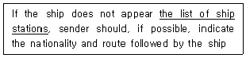
- 선박국명
- 선박 공지
- 선박국 국명록
- 선박국 일람표
(정답률: 95%)
25. 다음 문장에서 괄호 안에 들어갈 가장 적절한 단어는?.
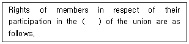
- Conferences
- Channel
- Situation
- Construction
(정답률: 80%)
26. Whoever wants to become a radio operator has to ( ) the state examination for radio operators first.
- listening
- pass
- sending
- used
(정답률: 75%)
27. 다음 중 밑줄 친 부분에 대한 가장 적합한 해석은?
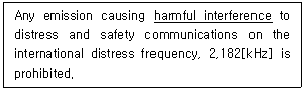
- 양호한 신호
- 유익한 통신
- 유해한 혼신
- 해로운 사고
(정답률: 95%)
28. 다음 문장이 뜻하는 무선 업무는?
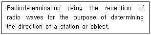
- Radiolocation
- Radionavigation
- Radiodetermination
- Radio direction-finding
(정답률: 58%)
29. 해상이동 업무용 약어 'SLT'의 의미를 바르게 나타낸 것은?
- International Information
- Notice to mariners
- Prefix office of destination
- Radio Maritime Letter
(정답률: 84%)
30. 다음 중 무선전화 알파벳 통화표에서 발음이 틀린 것은?
- F : FOKS TROT
- E : ECK OH
- L : LEE MAH
- T : TAH IM
(정답률: 85%)
31. 무선전화 절차용어 중 “STOP”은 다음 중 어떤 것을 전송하기 위한 것인가?
- 숫자 2
- 숫자 6
- 숫자 9
- 종지부
(정답률: 100%)
32. 다음 중 선교 대 선교 통신은?
- Ship-to-ship communications
- Ship-to-shore communications
- Shore-to-shore communications
- Bridge-to-Bridge communications
(정답률: 100%)
33. 다음 중 문장을 영작한 것으로서 적합한 것은?
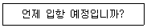
- What is the telegram charge?
- What frequency are you listening to?
- Where is your next port of call?
- When do you expect to enter port?
(정답률: 95%)
34. 다음 괄호 안에 들어갈 가장 적절한 것은?
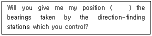
- time after time
- according to
- soonar or later
- owing to
(정답률: 85%)
35. 다음 문장의 괄호 안에 가장 적합한 것은?
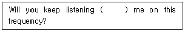
- to
- on
- about
- in
(정답률: 73%)
36. 다음 문장은 무엇에 대한 설명인가?
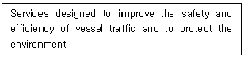
- VTS
- TSS
- Traffic lane
- Ship Reporting System
(정답률: 77%)
37. 다음 문장의 괄호 안에 들어갈 알맞은 말은?
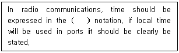
- 12hour UTC
- 24hour UTC
- 12hour LT
- 24hour LT
(정답률: 95%)
38. 다음 전문내용 중 밑줄 친 부분의 뜻을 잘못 설명한 것은?
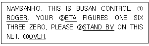
- 수신하고 이해하였다.
- 도착예정시간
- 잠시 기다려라.
- 귀국의 통화가 끝났는가?
(정답률: 89%)
39. ITU 전파규칙에 의거하여 다음 문장의 괄호 안에 들어갈 알맞은 말은?
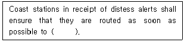
- a ship station
- a coast station
- a NAVAREA coodinator
- a rescue coordination centre
(정답률: 59%)
40. Who has the authority charged with coordinating marine meteorological information broadcasts by one or more National Meteorological Services acting as Preparation or Issuing Services within its area?
- METAREA Coodinator
- NAVAREA Coodinator
- National Coodinator
- Administration
(정답률: 56%)
3과목: 임의 구분
41. 방송법에 의한 방송사업을 위하여 이용하는 방송용 주파수의 관리는 어느 기관에서 수행하는가?
- 과학기술정보통신부
- 중앙전파관리소
- 방송통신위원회
- 한국방송공사
(정답률: 78%)
42. 전파를 이용하여 모든 종류의 기호·신호·문언·영상·음향 등의 정보를 보내거나 받는 것을 무엇이라고 하는가?
- 무선설비
- 무선통신
- 무선국
- 무선종사자
(정답률: 94%)
43. 과학기술정보통신부장관은 전파이용의 촉진과 전파와 관련된 새로운 기술의 개발 및 전파방송기기 산업의 발전 등을 위하여 전파진흥 기본계획을 몇 년마다 세워야 하는가?
- 1년
- 3년
- 4년
- 5년
(정답률: 90%)
44. 과학기술정보통신부장관은 대가에 의한 주파수를 할당하는 경우 주파수의 이용기간은 최대 몇 년의 범위로 고시하는가?
- 5년
- 10년
- 15년
- 20년
(정답률: 75%)
45. 다음 중 심사에 의해 주파수를 할당하고자 하는 경우 심사하는 사항이 아닌 것은?
- 전파자원 이용의 효율성
- 신청자의 재정적 능력
- 신청자의 기술적 능력
- 신청자의 전파발전을 위한 경력
(정답률: 69%)
46. 다음 중 주파수 분배 시 고려해야 할 사항에 포함되지 않는 것은?
- 전파이용 기술의 발전 추세
- 국제적인 주파수 사용동향
- 주파수의 이용현황 등 국내의 주파수 이용여건
- 무선설비의 이용 및 운영 실태
(정답률: 60%)
47. 다음은 선박국에 예비로 설치하는 무선설비의 기능확인에 관한 사항이다. 괄호 안에 들어갈 적당한 말은?
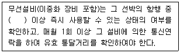
- 매일 1회
- 매일 2회
- 매주 1회
- 매주 2회
(정답률: 92%)
48. 선박의 갖추어야 하는 무선설비 중 디지털선택호출장치의 사용주파수가 아닌 것은?
- 2187.5 [kHz]
- 8414.5 [kHz]
- 156.8 [kHz]
- 156.525 [kHz]
(정답률: 85%)
49. 전파전자통신기능사의 종사범위에 해당되지 않는 것은? (단, 다중 무선설비의 기술운용을 제외한 국내통신을 위한 운용에 한정한다,)
- 선박에 개설하는 안테나공급전력 250와트 이하의 무선전화 및 팩시 밀리
- 육상에 개설하는 무선국의 무선설비로서 해안국과 항공국 외의 무선국의 안테나공급전력 150와트 이하의 팩시밀리
- 육상에 개설하는 무선국의 무선설비로서 어업용 해안국 외의 해안국의 안테나공급전력 100와트 이하의 팩시밀리
- 육상에 개설하는 무선국의 무선설비로서 항공국과 방송국 외의 무선국의 안테나공급전력 100와트 이하의 무선전화
(정답률: 64%)
50. 다음은 무선설비 적합성평가에 관련된 용어이다. “규정된 전원 전압”에 대한 설명으로 옳은 것은?
- 최저 정격전압의 –5%의 전압과 최고 정격전압의 +5% 전압 사이의 전압
- 최저 정격전압의 –10%의 전압과 최고 정격전압의 +10% 전압 사이의 전압
- 최저 정격전압의 –15%의 전압과 최고 정격전압의 +15% 전압 사이의 전압
- 최저 정격전압의 –20%의 전압과 최고 정격전압의 +20% 전압 사이의 전압
(정답률: 73%)
51. 다음 중 무선설비의 공동사용 명령과 환경친화적 설치 명령의 요건을 가장 바르게 나타낸 것은?
- 건물·도로 등에 설치·운용하는 무선설비로서 도시미관 및 자연환경을 훼손할 우려가 있다고 인정되는 경우
- 개발제한구역에 설치·운용하는 무선설비로서 무선설비 안테나가 비행고도에 영향을 줄 우려가 있다고 인정되는 경우
- 지하·터널 또는 건물 내부에 설치·운용하는 무선설비로서 전자파강도가 인체보호기준을 초과할 우려가 있다고 인정되는 경우
- 전파밀집지역에 설치·운용하는 무선설비로서 다른 통신망 또는 주변기기 등에 영향을 줄 우려가 있다고 인정되는 경우
(정답률: 89%)
52. 과학기술정보통신부장관이 무선설비의 전부 또는 일부를 다른 사람에게 임대·위탁 운용 또는 공동 사용하게 하는 목적으로 타당한 것은?
- 전자파 인체보호를 위하여
- 전파사용료 감면을 위하여
- 무선설비의 효율적 이용을 위하여
- 전파자원의 안정적 확보를 위하여
(정답률: 80%)
53. 다음 중 ITU의 기본구조와 정신에 관한 헌장의 주요 내용에 포함되지 않는 것은?
- 연합의 기능에 관한 기타 규정
- 전기통신에 관한 일반 규정
- 전기통신업무 운용에 관련된 각종 규정
- 전파통신에 관한 특별 규정
(정답률: 78%)
54. 다음 중 국제전기통신연합의 헌장에서 규정하는 전기통신에 관한 일반규정이 아닌 것은?
- 유해한 혼신
- 전기통신의 중지
- 전기통신의 비밀
- 관용통신의 우선순위
(정답률: 50%)
55. ITU의 조정위원회 구성인이 아닌 것은?
- 사무총장
- 사무차장
- 연구위원장
- 3국의 국장
(정답률: 82%)
56. 디지털선택호출장치(DSC)에 의한 조난 호출에 따라 무선전화로 응답할 수 있는 주파수는?
- 500[kHz]
- 518[kHz]
- 2,182[kHz]
- 410[kHz]
(정답률: 74%)
57. SOLAS협약상 위성 비상위치지시용 무선표지(위성 EPIRB)가 갖추어야 하는 사항으로 잘못된 것은?
- 용이하게 접근할 수 없는 장소에 설치할 것
- 수동으로 쉽게 이탈되고 한 사람에 의해 생존정으로 쉽게 이동 될 수 있을 것
- 선박이 침몰한다면 자유로이 부양할 수 있고 또 부양한 때는 자동으로 작동될 수 있을 것
- 406[MHz] 주파수대에서 운용하는 극궤도 위성업무로 조난경보를 송신할 수 있을 것
(정답률: 74%)
58. 다음의 내용에 대한 용어 정의로 적절한 것은?
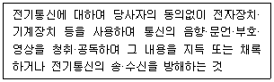
- 검열
- 감청
- 경청
- 속청
(정답률: 95%)
59. 통신보안의 1차적 책임은 누구에게 있는가?
- 회사의 책임자
- 통신 이용자
- 통신 기획자
- 통신 사업자
(정답률: 85%)
60. 통신보안의 3대 수단에 해당되지 않는 것은?
- 암호보안
- 송신보안
- 시설보안
- 자재보안
(정답률: 95%)